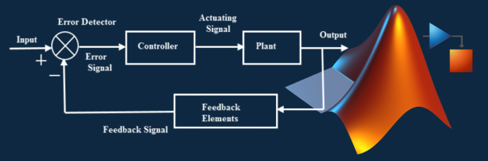

🧠 MATLAB & Simulink Engineering
We leverage MATLAB and Simulink for modelling, control design, simulation, optimisation, and algorithm development across industrial, academic, and research applications.
📐 System Modelling & Simulation
- First-principles modelling based on physics and dynamics
- Transfer function and state-space representation
- Time and frequency domain analysis (step/impulse response, Bode plots, Nyquist, root locus)
- Simscape and Simulink for multi-domain system modelling
- Sensor fusion, signal filtering, noise modelling
- Linearisation and model reduction
🧮 PID Control Example in MATLAB
🌀 Classical & Modern Control Design
- PID tuning and performance analysis
- Lead-lag compensation and phase margin improvement
- Smith predictor for systems with time delays
- State-space controller design: pole placement, observer design
- Model Predictive Control (MPC) and constraint handling
- LQR and optimal control design (including Riccati-based solutions)
- Nonlinear control and feedback linearization
- MRAS (Model Reference Adaptive Systems)
📊 Analysis, Plotting & Toolboxes
- Custom plotting for time series, frequency response, FFT, bode/nyquist plots
- Data import/export, structuring, and batch analysis
- Signal processing toolbox: filtering, windowing, spectral analysis
- Control System Toolbox, Optimization Toolbox, Symbolic Toolbox
🔍 Optimisation & Advanced Algorithms
- Linear and nonlinear programming (LP/NLP)
- Dynamic programming and extremum-seeking control
- Real-time parameter tuning and cost function design
- Constrained optimisation for setpoint tracking and energy efficiency
- Genetic algorithms, particle swarm, and gradient-based methods
⚙️ Simulink Integration & Automation
- Simulation of control systems with plants, sensors, and disturbances
- Stateflow for logic and supervisory control
- Real-time testing (MIL/SIL/HIL) and Rapid Prototyping
- Code generation for embedded targets (via Simulink Coder / Embedded Coder)
- Test harnessing, simulation automation, and batch runs
🚀 Deployment & Industrial Integration
- Integration of MATLAB with external systems (CSV, OPC UA, sockets, DLLs)
- Packaging MATLAB apps with custom GUIs and interactive controls
- Communication with PLCs and data acquisition systems
- Export of control logic to C/C++/HDL environments